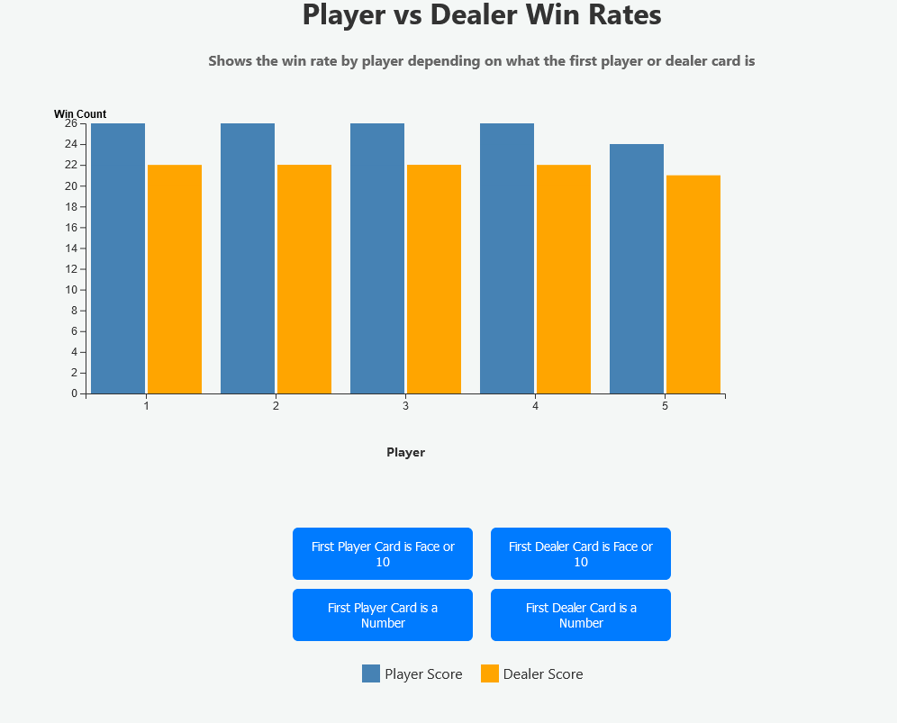

Design Process
My design process began with analysing the dataset to determine what questions it could answer and if I needed to make
any modifications to the dataset. The original dataset is attributed to Kaggle user Aiden Flynn and can be found
here.
After choosing the dataset I began by doing some D3 demos to get a good feel for how the process worked. I'm used to working with CSS,HTML, and Javascript, however, it's not usually in a one page design. The first idea was a bar graph just showing player versus dealer scores.
 I also created a simple Blackjack strategy heat map, but I did not like the way it looked and the direction it would have gone so I scrapped that idea.
I also created a simple Blackjack strategy heat map, but I did not like the way it looked and the direction it would have gone so I scrapped that idea.
 I then created a couple of sketches to help guide my design process, creating a bar graph example and a pie chart example. I ended up with the bargraph because I felt it best illustrated the question I wanted an answer to with the data.
I then created a couple of sketches to help guide my design process, creating a bar graph example and a pie chart example. I ended up with the bargraph because I felt it best illustrated the question I wanted an answer to with the data.
Design Rationale
I ended up deciding on a bar graph because I felt it was the best way to display the information that I had chosen. The stacked bar graph was chosen because I had two distinct sets of data to compare, player vs dealer wins. I had initially thought I wanted to add a third column to show when the player and dealer tied, known as a push, but I felt that the graph would end up too cluttered and decided against including it. I chose to show each player's results to make the visualization more robust as only showing all players vs the dealer doesn't tell the entire story. I added buttons because I wanted the visualization to be more interactive. Color choice for each variable was chosen purely on how visually appealing the colors would be against the chosen background color. The background color was chosen to be easier on the eyes than a pure white background and the help the colors of the graph pop a bit more.
Question Answered
There were a couple different questions I could have answered with the dataset I chose but the one I ended up choosing was to see what the wins rates were for the player vs the dealer based on the values of the first card delt. I was curious to see if there was a noticable impact on the result and therefore the decision making process based on the first card an individual saw.
When the first player card is a number the dealers win rate increases. I believe this is the case because the goal is to get the largest number possible to beat the dealer and not go over 21, known as a bust. A player delt a lower number will have to hit more to get a larger score, increasing the possibility of a bust.
When the first player card is 10 or Face card (Jack, Queen, King, or Ace), the player win rate increases. As the player is already that closer to 21 they are de-incentivized to hit as often, reducing the chance of a bust and leaving the only way for the dealer to win as having a larger number.
When the dealer's first card is a number, the player win rate increases. This shows that being delt a number card first, regardless of player or dealer, is the subopmtimal first card.

When the dealer's first card is a 10 or Face card, the player win rate decreases slightly. This shows that being delt a 10 or Face card is the optimal first card.